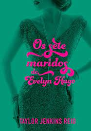
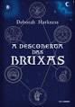

Bookshelf
Blog srobre minhas leituras
Sobre mim
Sou a Ana tenho 16 anos e entrei no universo literário esse ano. Nesse blog vocês vão acompanhar as minhas leituras, e as resenhas que vou postar conforme for finalizando, livros novos. Minha autora favorita é a Julia Quinn, e foi por causa da série Bridgerton que eu entrei no mundo dos livros.
Booktok
os livros que li por influência do tiktok.
Os 7 maridos de Evelyn Hugo
Nota: 10/10
Sinopse: Evelyn Hugo, uma das maiores estrelas de Hollywood, agora a aproximar-se dos 80 anos, decide finalmente contar tudo sobre a sua vida recheada de glamour e de uma boa dose de escândalos. Quando escolhe a desconhecida Monique Grant para escrever a sua história, todos ficam surpreendidos, incluindo a própria jornalista.
Autora: Taylor Jenkins Reid
Páginas: 360
Top 3 favoritos
os meus queridinhos!!!
Todas as suas (im)perfeições
Nota: 10/10
Sinopse: Todas as suas imperfeições narra a história de Quinn e Graham. Eles se conhecem no pior dia de suas vidas; ela chega mais cedo de uma viagem para surpreender o noivo, ele testemunha a traição da namorada. E é assim que ambos acabam no corredor de um prédio, trocando confidências, biscoitos da sorte e palavras de conforto. Fim da dança… se o destino não tivesse outros planos para os dois. Meses mais tarde, os acordes tocam para o casal mais uma vez e eles se reencontram. Graham está convencido de que são almas gêmeas. Quinn jamais se sentiu dessa forma antes. A intensidade do sentimento os assusta, mas eles mergulham de cabeça mesmo assim. O casamento é tudo o que sonhavam, a parceria perfeita. Mesmo nos momentos difíceis, sabem que podem contar com o outro. Nenhum deles desiste do amor que sentem. Até que a primeira nota dissonante abala a sinfonia do casal. Até que Quinn parece estar disposta a trocar tudo o que é pela única coisa que não consegue ser: mãe. A luta do casal por um filho arrisca os alicerces da relação. Quinn não pode engravidar. Graham não é um candidato para adoção por conta de um erro do passado. O impasse os deixa parados no salão, no silêncio. A orquestra está em suspenso. Os dois parecem surdos para a música do amor. Em Todas as suas imperfeições, Colleen coloca sua marca em mais uma obra comovente e inesquecível.
Autora: Colleen Hoover
Páginas: 304
Não dava nada mais amei
me surpreendi e me apixonei
A descoberta das bruxas
Nota: 10/10
Sinopse: Em A Descoberta das Bruxas, Diana Bishop (Teresa Palmer) é uma jovem descendente das bruxas de Salem que está sempre pelos corredores da Universidade de Oxford. No entanto, ela só embarca em uma jornada repleta de magia ao encontrar um manuscrito desaparecido na biblioteca da faculdade.
Autora: Deborah Harkness
Páginas: 638
Próximas leituras
meus próximos alvos
Um milhão de finais felizes
Sinopse: Um milhão de finais felizes é uma história de amor, mas não como estamos acostumados a ler. Jonas se sente uma fraude, um completo fracasso. No início da vida adulta, ele se vê perdido, sem saber o que fazer da vida, sem ter iniciado uma faculdade, sem conseguir contar a verdade para a sua família sobre si mesmo.
Autora: Vitor Martins
Páginas: 349